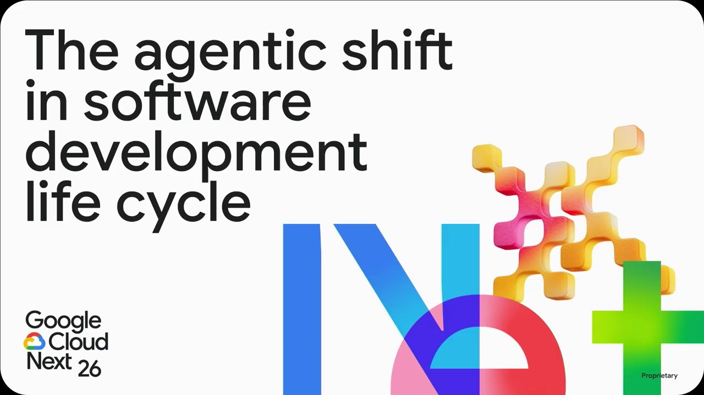
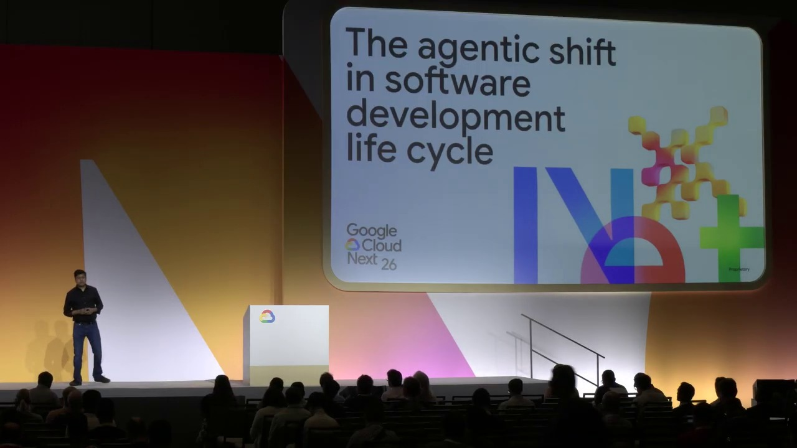
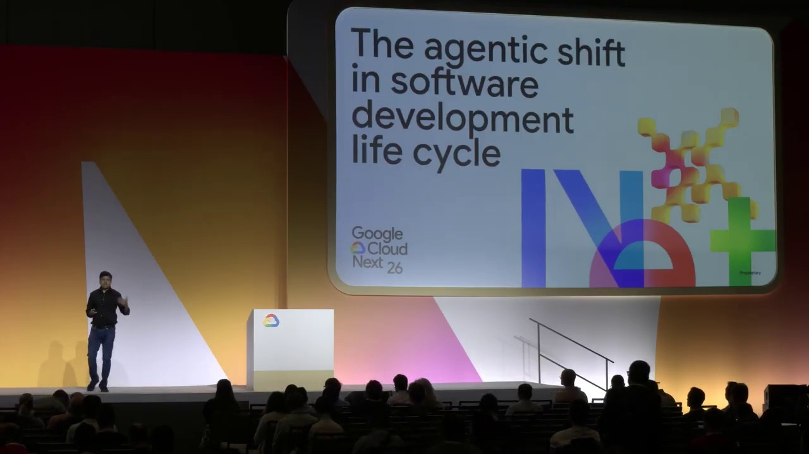
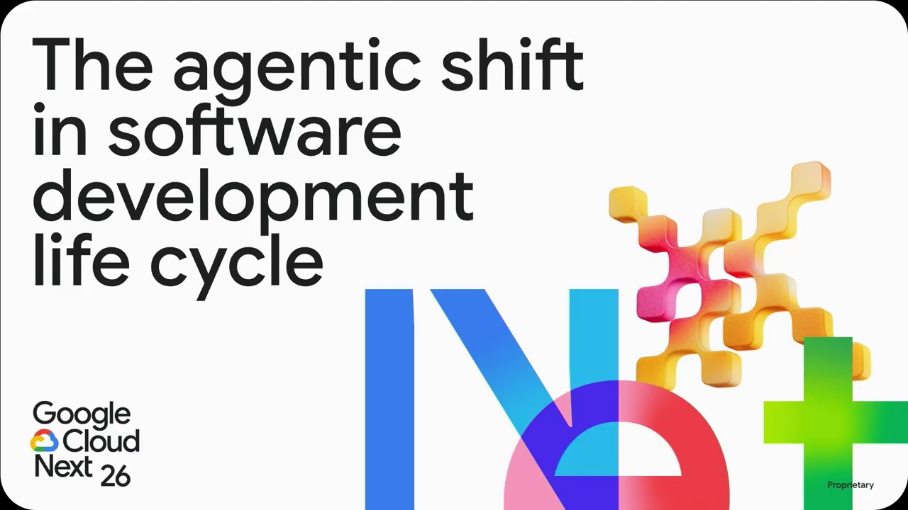
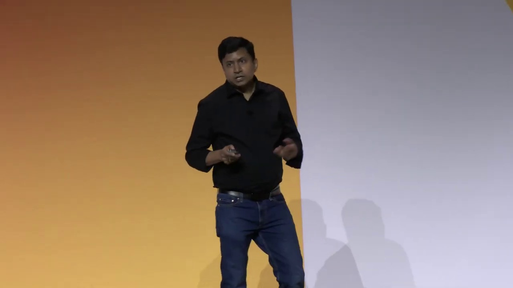
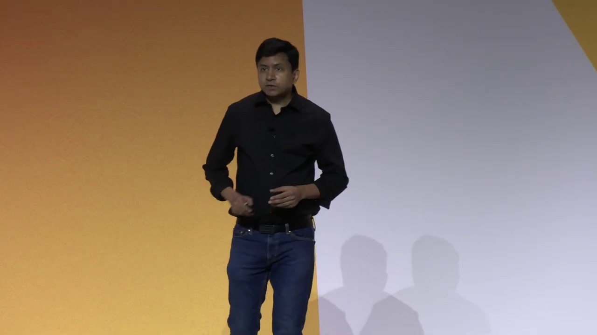
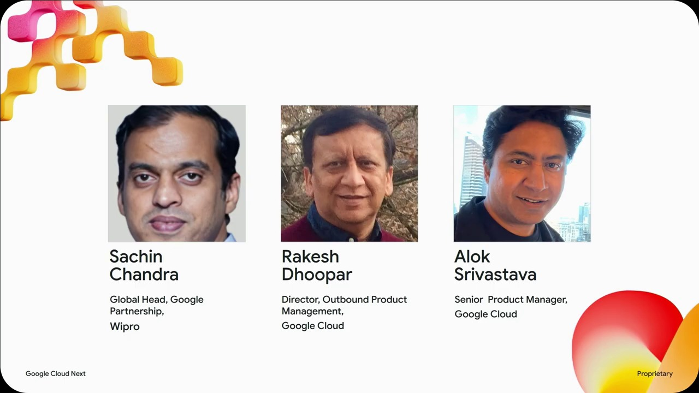

Key Moments









Summary & Script
The agentic shift in software development life cycle
Source: https://www.youtube.com/watch?v=161TA9Z0vxk
Video ID: 161TA9Z0vxk
This YouTube video transcript discusses the "Agentic Shift in Software Development Life Cycle," focusing on the increasing adoption of AI agents in software development, challenges in managing multiple agents, and solutions for taking AI-generated code into production.
Agentic Shift in Software Development Life Cycle
Overview
The video explores the significant rise of AI agents in software development, drawing on data from the DevOps Research and Assessment (DORA) survey, which indicates that nearly 90% of developers are using AI at work, with approximately 70% using it for writing new code. The presentation highlights the evolution of AI from simple prompt-response interactions to more complex planning and execution capabilities with agents. It also addresses the challenges of managing multiple agents in a system and introduces "Cyan," an open-source testbed for orchestrating AI agents, to facilitate secure and isolated multi-agent execution. Finally, it touches upon the importance of seamlessly integrating AI-generated code into the production pipeline.
Major Sections/Topics Covered
Introduction and AI Adoption Trends:
- The prevalence of AI and agents at Google Cloud Next.
- The role of AI as an "amplifier" in software development.
- Google's internal adoption of AI for new code generation (reaching 75%).
- The evolution from retrieval to reasoning and from prompt/response to plan/execute with AI.
The Emergence of Agents:
- How agents are moving beyond simple iterative prompting to building complex applications.
- The concept of "humans in the loop" for agentic workflows.
- Examples like AI code review agents on GitHub.
Challenges of Multi-Agent Systems:
- Potential for conflicts and agents interfering with each other.
- Isolation and security concerns (agents going rogue).
- Tight coupling between agents and specific AI models.
Introducing Cyan: An AI Agent Orchestrator:
- Described as a "hypervisor of agents."
- An open-source, container-based orchestration tool for managing concurrent LLM agents.
- Ensures isolated and secure execution of agents.
Cyan in Action (Demo):
- Demonstration of setting up and running Cyan on a local environment.
- Configuration of supported LLMs and container images.
- Creating a Python script using an AI agent within Cyan.
- Utilizing
tmuxfor isolated terminal sessions for agents. - Highlighting the isolation of agent work directories from the main workspace using
worktree list. - Demonstrating the ephemerality/non-ephemerality of agent work and the ability to accept or reject the agent's output.
Multi-Agent Orchestration with Cyan:
- Cyan's capability to orchestrate scenarios where agents spawn, converge, or diverge.
- Managing multiple agents regardless of their underlying models or spawning patterns.
Benefits and Key Features of Cyan:
- Parallel and independent execution of multiple agents.
- Harness-agnostic and open-source.
- Community-driven contributions.
Taking AI-Generated Code to Production:
- The importance of moving AI-generated code into production.
- Addressing bottlenecks in the overall development pipeline.
- Maintaining velocity throughout the entire pipeline.
Key Takeaways
- AI is rapidly transforming software development, acting as a significant amplifier of developer productivity.
- Agents represent the next evolution in AI capabilities, moving towards planning and execution for complex tasks.
- Managing multiple AI agents introduces challenges related to security, isolation, and potential conflicts.
- Cyan is presented as a pivotal solution for orchestrating multiple AI agents in a secure, isolated, and harness-agnostic manner, akin to a hypervisor for agents.
- The integration of AI-generated code into production pipelines remains a critical aspect for realizing the full benefits of AI in software development.
Notable Quotes
- "The primary role of AI in software development is that of an amplifier."
- "If your context is clean and if it is reasonable enough then the same goodness will flow in will spread into your entire workspace or code space. But if my intent and my context is lacking somewhere then the same mess will flow in or spread into my entire workspace or code space."
- "With agents coming in, you are not just typing a prompt and getting a response and then doing an iterative prompting..."
- "Think about can as hypervisor of agents, which means that now you are managing a a fleet of agents right and all these agents are running in isolated environment in the form of containers in a fully secure manner."
- "The net effect of all of these things is that the velocity of developing code has gone way up. The productivity of developers has gone way up. But at the same time, the velocity is impacted by how the code actually makes it to production."
Podcast Script
JORDAN: Welcome everyone, to another episode of our podcast. Today, we're diving into the exciting world of AI in software development, specifically focusing on something called the "agentic shift."
MIKE: It's a pretty hot topic right now, especially at events like Google Cloud Next. We've been seeing AI agents everywhere, and the big question is, how do we actually use them effectively and, more importantly, get the code they create into production?
JORDAN: Exactly, Mike. The transcript we're working from highlights a significant trend: the Dora survey shows nearly 90% of developers are using AI, with about 70% using it for writing new code. That's a massive adoption rate.
MIKE: And what's fascinating is that this isn't just about generating brand new code from scratch, the "greenfield" development. The transcript also touches on "brownfield" development, which is adapting or modernizing existing codebases.
JORDAN: The Dora survey also points out that AI's primary role is an "amplifier." This means if the input context is good, the AI boosts that quality. But if there's a mess in the input, that mess gets amplified too, which is a crucial point to consider.
MIKE: It's like a supercharged assistant, right? It can make you much more productive, but you still need to guide it carefully. The transcript mentions that at Google, 75% of new code is now AI-generated, up from just 25% a couple of years ago.
JORDAN: That rapid evolution is attributed to moving from simple retrieval to reasoning, and from basic prompt-response to planning and execution, especially with the advent of agents that can orchestrate complex tasks.
MIKE: The concept of "humans in the loop" is really key here. We're not at a fully self-driving car level for software development yet, but agents are starting to automate things like code reviews, even if human oversight is still often needed.
JORDAN: And when you have multiple agents working together, conflicts are inevitable. This leads us to the core of what the transcript discusses: managing these multi-agent systems and the challenges like isolation, security, and conflicting actions.
MIKE: That's where a new framework called "Can" comes in, which is described as an "open-source testbed for orchestrating AI agents." Think of it like a hypervisor, but for agents, managing them in isolated, secure containers.
JORDAN: The demo shows Can running locally, demonstrating how it can spin up agents in separate environments, ensuring they don't interfere with your main workspace. This isolation is crucial for preventing unintended consequences, like an agent accidentally deleting files.
MIKE: It's pretty neat that the transcript mentions you can detach an agent and it continues to run in the background, allowing you to multitask without losing progress. And importantly, the work done by the agent persists even after it's stopped, which is a big improvement over some ephemeral AI coding tools.
JORDAN: The flexibility of Can is highlighted, supporting multiple LLMs and even enabling complex multi-agent workflows where agents can spawn sub-agents or converge their tasks. It aims to be harness-agnostic, meaning it can work with different AI models.
MIKE: So, after all this AI-assisted coding, the natural next question is: how do we get this code into production? The transcript transitions to discuss the importance of overall pipeline velocity and addressing the bottlenecks that can prevent AI-generated code from reaching its final destination.
JORDAN: It emphasizes that writing code is only half the battle; ensuring it can be deployed reliably and efficiently is critical for realizing the full potential of AI in software development. The goal is to maintain that increased velocity across the entire development lifecycle.
MIKE: So, to recap, we're seeing massive AI adoption in software development, with agents acting as powerful amplifiers. Frameworks like Can are emerging to manage these agents securely and efficiently, paving the way for greater productivity.
JORDAN: But as exciting as agentic development is, the real challenge lies in integrating that work seamlessly into production pipelines to achieve the full benefits. It's a continuous evolution.
MIKE: Absolutely. That's all the time we have for today. Thanks for tuning in, and we'll catch you next time!